Truy cập đúng nơi
Nhấn Vào hệ thống trên trang chủ. Đăng nhập bằng tài khoản được cấp; sau đó kiểm tra vai trò và học phần đang chọn. Nếu không thấy học phần, liên hệ quản trị viên để kiểm tra danh sách thành viên.
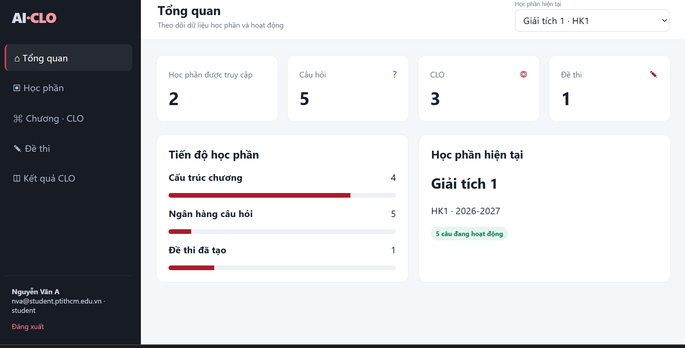
Hướng dẫn theo vai trò và quy trình nghiệp vụ, kèm hình ảnh từ màn hình thực tế. Chọn nhóm nội dung bên dưới để bắt đầu.
Bản hướng dẫn: 14/10/2026 · Chức năng phụ thuộc tài khoản và quyền truy cập.
Thao tác đúng học phần đang chọn. Ảnh minh họa có thể khác một số chi tiết nhỏ so với phiên bản đang chạy.
BẮT ĐẦU
Mỗi tài khoản chỉ nhìn thấy học phần và thao tác được phân quyền.
Nhấn Vào hệ thống trên trang chủ. Đăng nhập bằng tài khoản được cấp; sau đó kiểm tra vai trò và học phần đang chọn. Nếu không thấy học phần, liên hệ quản trị viên để kiểm tra danh sách thành viên.

Tổng quan hệ thống cho biết các học phần và công việc theo vai trò; Tổng quan học phần tập trung vào môn/lớp đang chọn. Khi chuyển học phần, cần kiểm tra lại ngữ cảnh trước khi tạo câu hỏi, giao bài hoặc đọc kết quả.
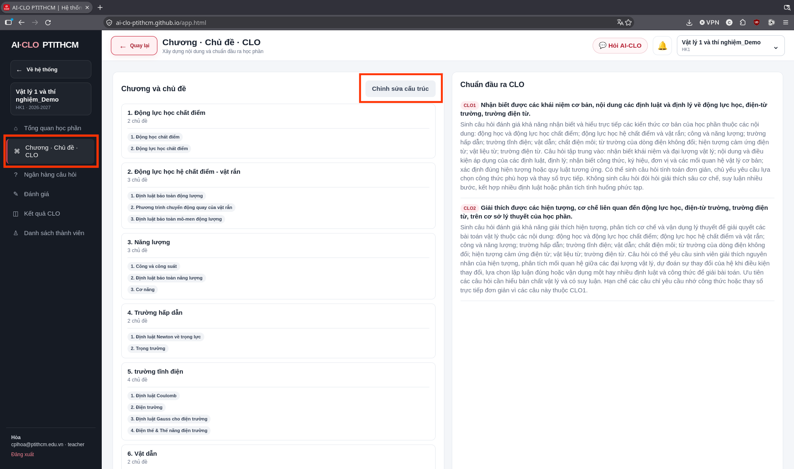
QUẢN TRỊ VIÊN
Thiết lập tài khoản, học phần và nội dung nguồn trước khi giao giảng viên tổ chức bài kiểm tra.
Mở Quản lý tài khoản, tìm kiếm tài khoản trước khi tạo mới để tránh trùng. Có thể thêm thủ công hoặc nhập danh sách theo mẫu; kiểm tra họ tên, email, mã sinh viên và vai trò Admin / Teacher / Student. Sau khi thêm, kiểm tra tài khoản đang hoạt động.
Vào Môn học, chọn + Tạo môn học. Nhập thông tin học phần/lớp phù hợp, lưu và mở học phần vừa tạo. Phân công giảng viên phụ trách và thêm sinh viên vào danh sách thành viên đúng lớp.
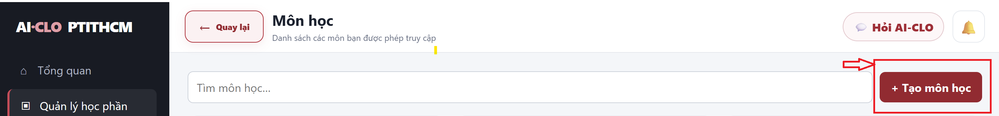
Sử dụng ô tìm kiếm trong Môn học để rà soát lớp đã có, tránh tạo nhầm bản trùng. Kiểm tra thành viên học phần và ngân hàng câu hỏi dùng chung trước khi chỉnh sửa cấu trúc.
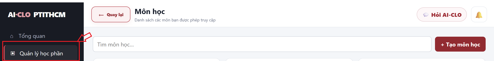
Sau khi chọn học phần, mở Chương · Chủ đề · CLO. Tạo chương, chủ đề thuộc chương và chuẩn đầu ra tương ứng. Ghi nội dung CLO rõ ràng trước khi sinh hoặc nhập câu hỏi.
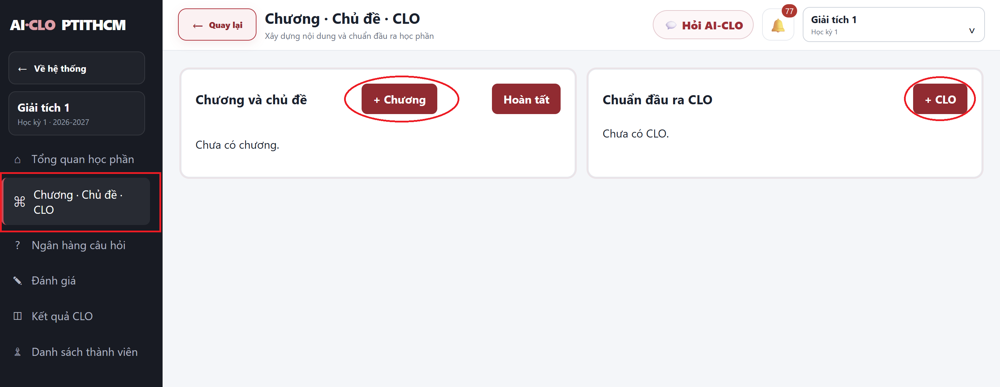
Từ mục + CLO, thêm và rà soát các chuẩn đầu ra. Câu hỏi phải được gán đúng phạm vi Chương/Chủ đề/CLO và được kiểm duyệt trước khi đưa vào bài đánh giá.
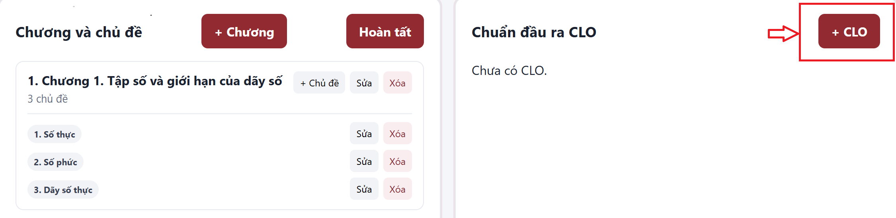
GIẢNG VIÊN
Một quy trình liên tục từ đề cương học phần đến phản hồi sau đánh giá.
Mở học phần và rà soát cấu trúc. Dùng + Chương và + Chủ đề khi có quyền chỉnh sửa; hoàn tất cấu trúc rồi mới phân loại câu hỏi. Khi sử dụng ngân hàng chung, lưu ý thay đổi có thể ảnh hưởng nhiều học phần.
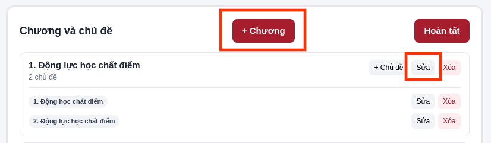
Kiểm tra tên, thứ tự và phạm vi chủ đề. Nếu số chủ đề hoặc CLO chưa khớp đề cương, chỉnh sửa trước khi phân tích ma trận hoặc tạo bài kiểm tra.
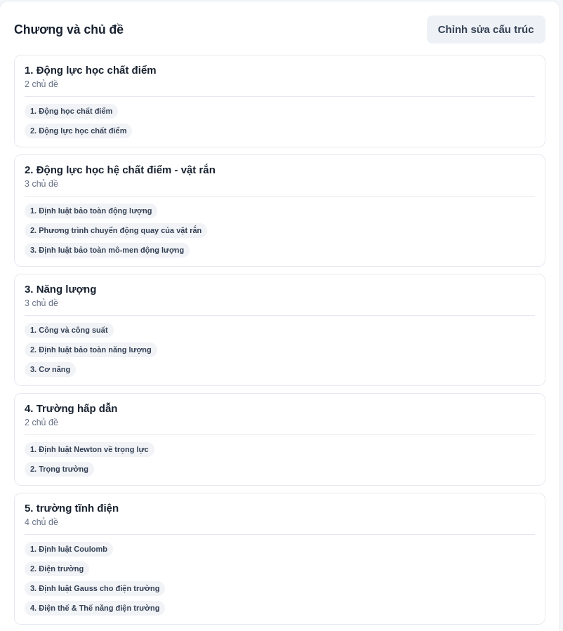
Trong Ngân hàng câu hỏi, phân biệt Luyện tập – kiểm tra (dùng cho luyện tập/bài online) với Đề thi – bảo mật (phục vụ quy trình đề thi cuối kỳ). Lọc theo Chương, Chủ đề, CLO; thêm, sửa hoặc nhập Excel theo mẫu. Không dùng câu chỉ thuộc ngân hàng bảo mật để phát hành bài online.
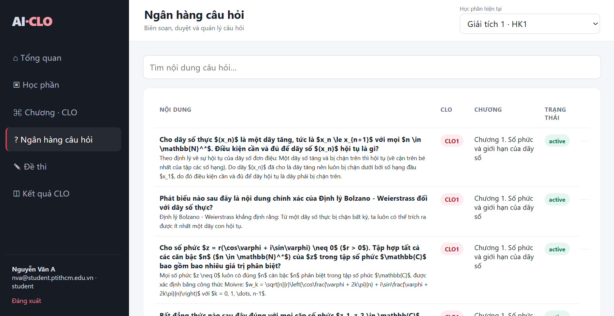
Chọn phạm vi chương/chủ đề và CLO, nhập yêu cầu, số lượng câu, rồi nhấn Sinh câu hỏi. AI chỉ tạo bản đề xuất; kết quả cần được giảng viên kiểm tra trước khi lưu.
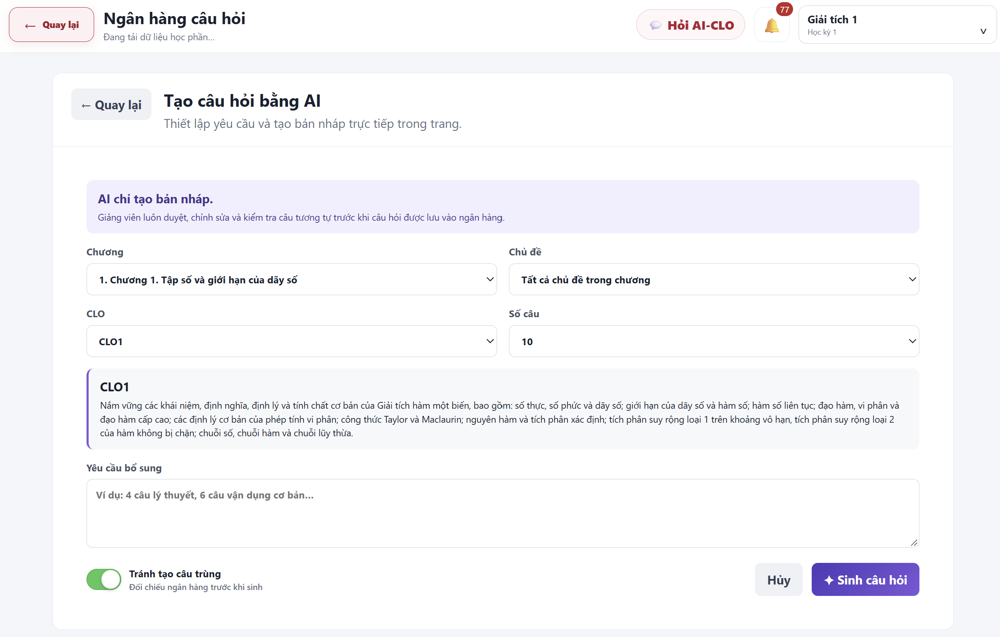
Tại màn hình duyệt, đọc câu hỏi và bốn phương án, kiểm tra đáp án, công thức, giải thích và CLO. Có thể sửa hoặc bỏ qua câu chưa đạt; chỉ nhấn Xác nhận và lưu đối với câu đã kiểm tra.
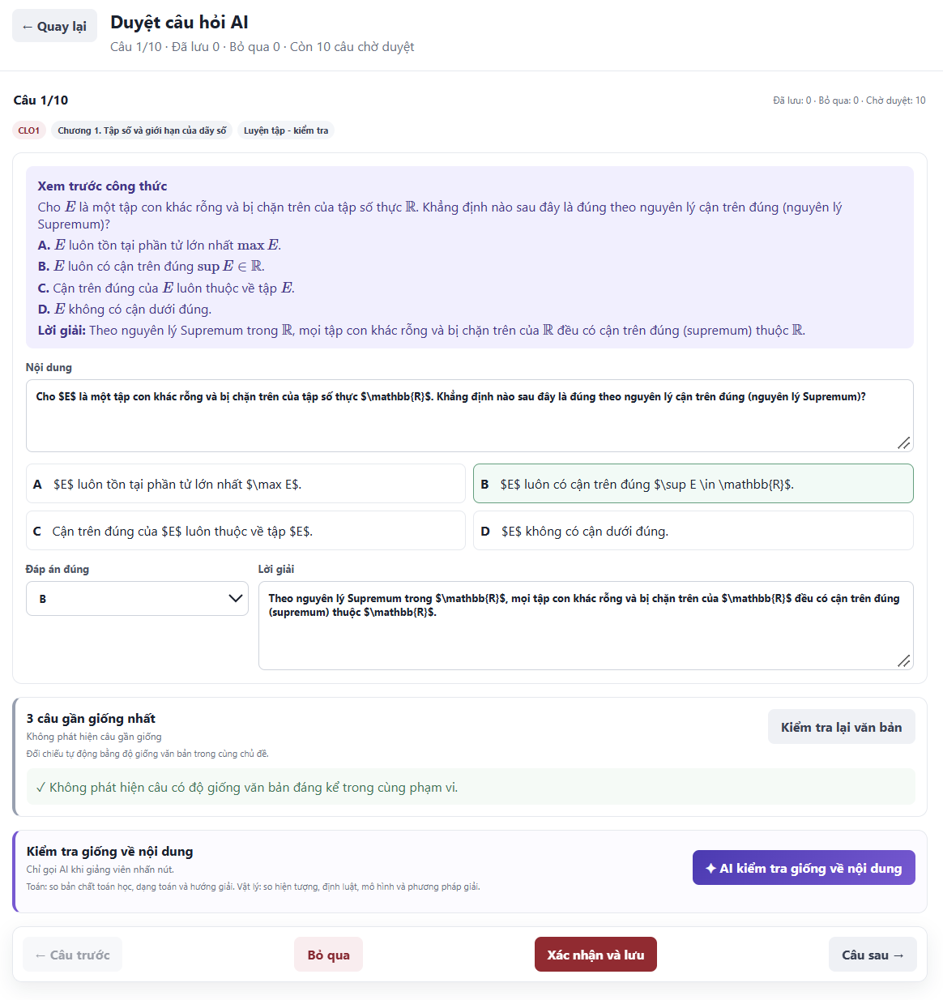
Mở Đánh giá → Bài kiểm tra trực tuyến, chọn + Tạo bài kiểm tra. Thiết lập thông tin, thời lượng, số lần làm, phạm vi Chương/Chủ đề và ma trận CLO. Kiểm tra số câu khả dụng, chế độ rút câu và quyền xem đáp án trước khi phát hành.
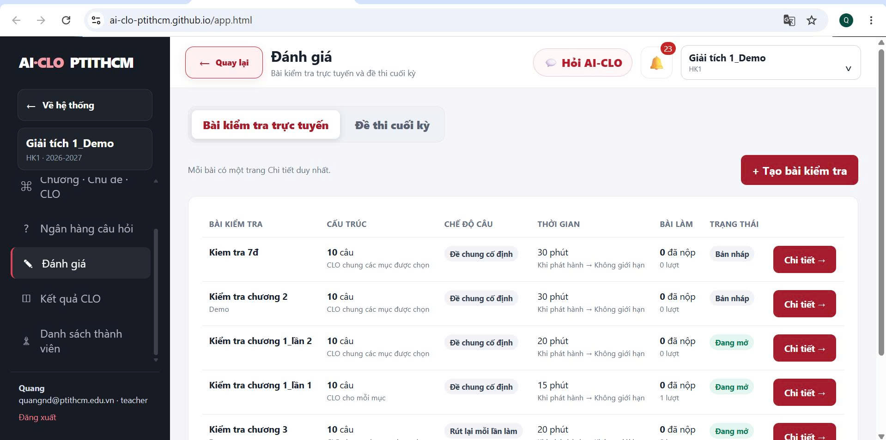
Có thể sử dụng đề chung cố định, đề riêng theo sinh viên, rút lại mỗi lượt hoặc cố định kết hợp ngẫu nhiên. Với chế độ kết hợp, chọn câu cố định trước, phần còn lại rút theo ma trận. Dùng Làm thử để rà soát nội dung và thời gian.
Tại Chi tiết bài kiểm tra, mở AI-CLO | LIVE (nếu được phân quyền). Theo dõi tiến độ, câu hiện tại, thời gian còn lại, trạng thái kết nối và cảnh báo rời màn hình. Đây là tín hiệu để giám thị xem xét, không phải kết luận gian lận tự động.
Xem lượt làm, điểm và mức đạt từng CLO. Trong danh sách sinh viên, có thể sắp xếp, xuất Excel khi nút tương ứng xuất hiện và mở AI để tham khảo nhận xét. Luôn đối chiếu phản hồi AI với dữ liệu gốc.
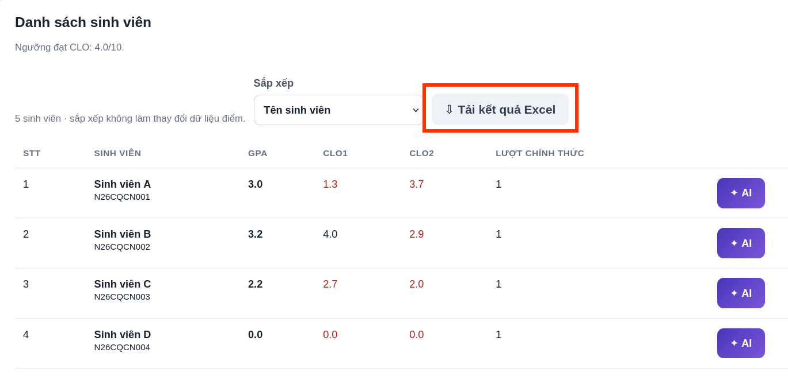
SINH VIÊN
Thao tác tuần tự, kiểm tra trạng thái bài và quyền xem kết quả sau khi nộp.
Chọn học phần, mở Bài kiểm tra trực tuyến và đọc kỹ thông tin bài, số câu, thời gian, số lượt còn lại. Chỉ nhấn Bắt đầu khi đã sẵn sàng.
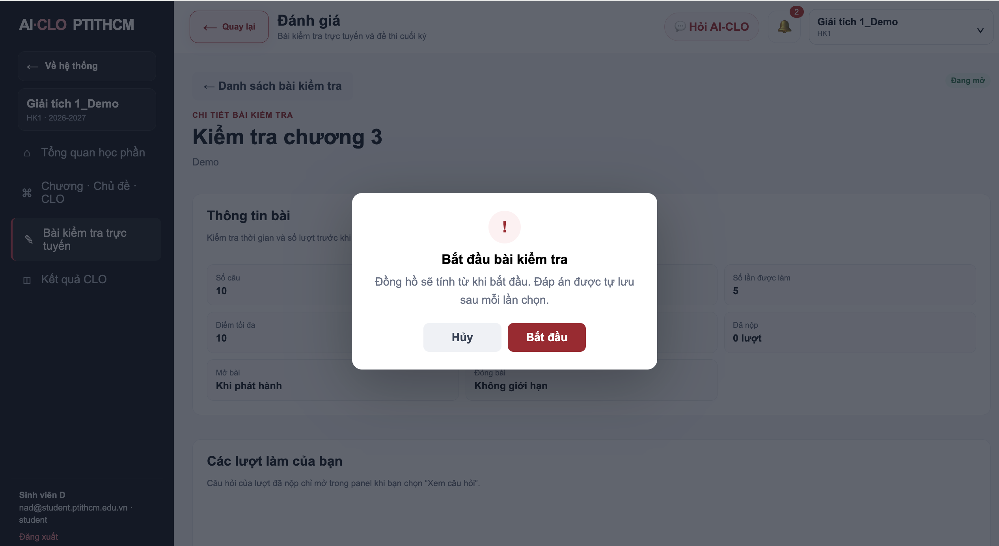
Chọn phương án cho từng câu, dùng điều hướng để quay lại các câu chưa trả lời, theo dõi đồng hồ và tình trạng lưu bài. Tránh tự ý đóng trình duyệt; nếu mất kết nối, kiểm tra lại bài trước khi tiếp tục.
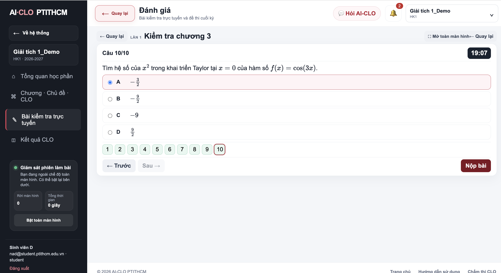
Rà soát toàn bộ câu trước khi nộp. Sau khi xác nhận, hệ thống ghi nhận lượt làm. Điểm, chi tiết câu và đáp án hiển thị theo cấu hình do giảng viên thiết lập.
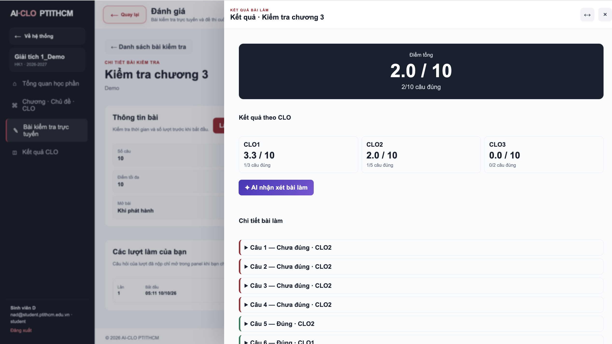
Vào Kết quả CLO để xem điểm tổng hợp và các CLO đã được đánh giá. Dùng thông tin này để xác định chủ đề cần ôn tập tiếp theo.
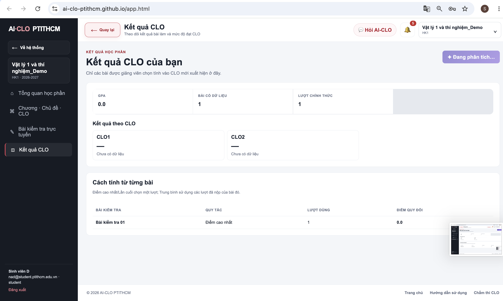
Nếu học phần và bài đánh giá cho phép, chọn mục nhận xét AI để tham khảo gợi ý củng cố kiến thức. Nội dung AI hỗ trợ học tập, không thay thế điểm chính thức hay đánh giá của giảng viên.
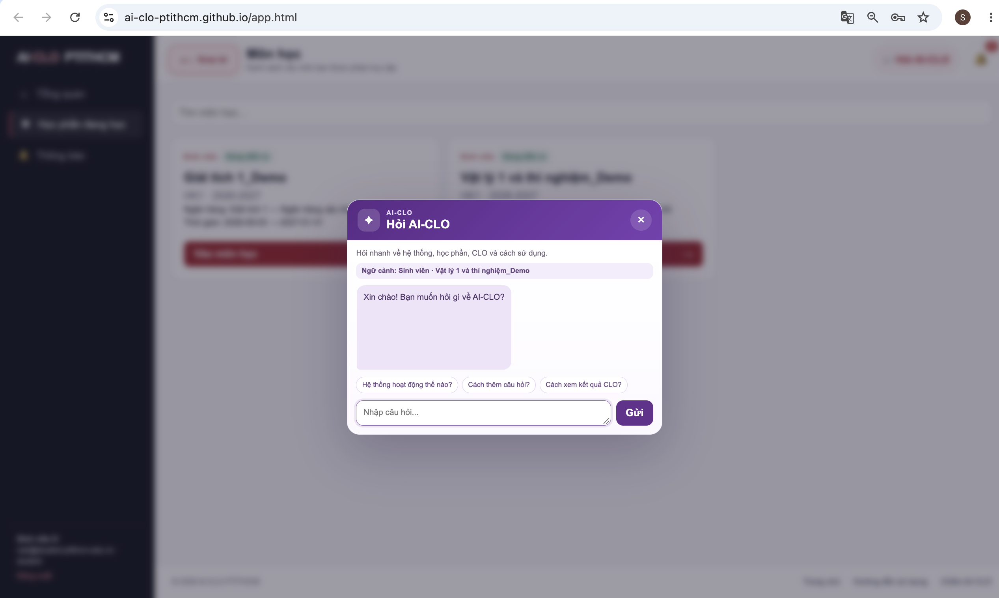
CÔNG CỤ
Các công cụ độc lập phục vụ công việc giảng dạy và kiểm tra.
Dùng công cụ Chấm thi CLO để xử lý bảng trả lời và đáp án kèm CLO, kiểm tra SBD/mã đề và xuất bảng kết quả. Đây là công cụ riêng, không đồng nhất với bài online.
Mở Chấm thi CLODùng Trộn đề để xử lý đề theo nghiệp vụ riêng và kiểm tra kết quả trước khi sử dụng.
Mở Trộn đềDùng Công bố điểm theo luồng nhập dữ liệu, thiết lập công khai và tra cứu; tránh đăng danh sách điểm nhạy cảm trực tiếp vào trang công khai.
Mở Công bố điểmHỖ TRỢ
Những việc nên kiểm tra trước khi liên hệ người quản trị học phần.
Kiểm tra lại học phần đang chọn, trạng thái bài (nháp/sắp mở/đang mở/đã đóng/hết hạn) và phân quyền tài khoản. Liên hệ giảng viên hoặc quản trị viên nếu vẫn chưa thấy.
Khi sự cố xảy ra, mở lại hệ thống và kiểm tra trạng thái lượt làm trước khi bắt đầu thao tác mới. Nếu đang trong ca thi, báo giám thị để được xử lý đúng quy trình; thời gian còn lại được xác định theo hệ thống.
Một số bài chỉ mở nội dung sau thời điểm hoặc theo quyền được giảng viên cấu hình. Nhận xét AI có thể không khả dụng cho mọi bài; không suy đoán lỗi khi quyền chưa được bật.
Ảnh trong hướng dẫn được ghi nhận từ quy trình thực tế tháng 10/2026. Một số nút và màn hình có thể thay đổi theo phiên bản, vai trò hoặc học phần.